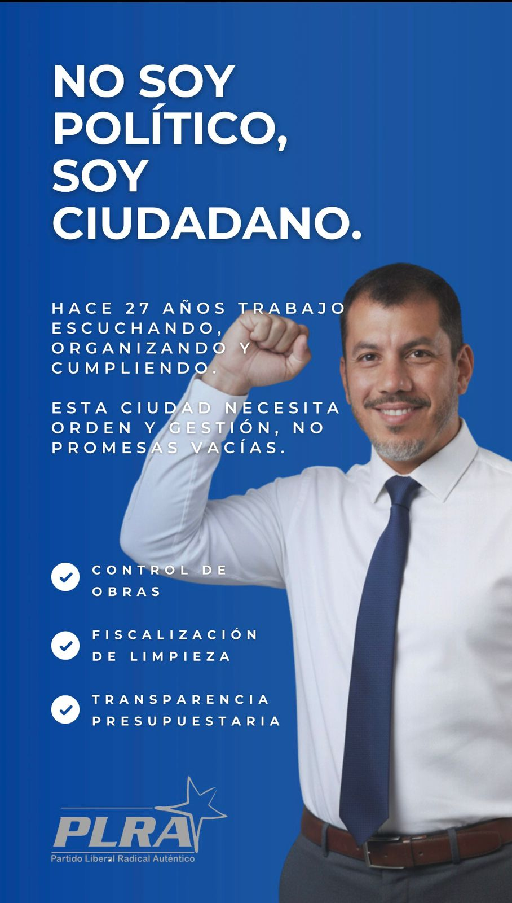
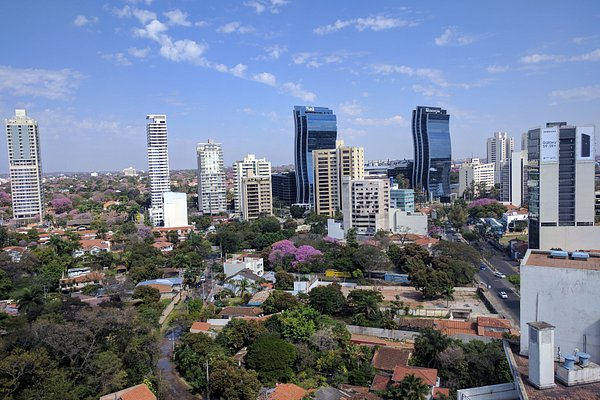
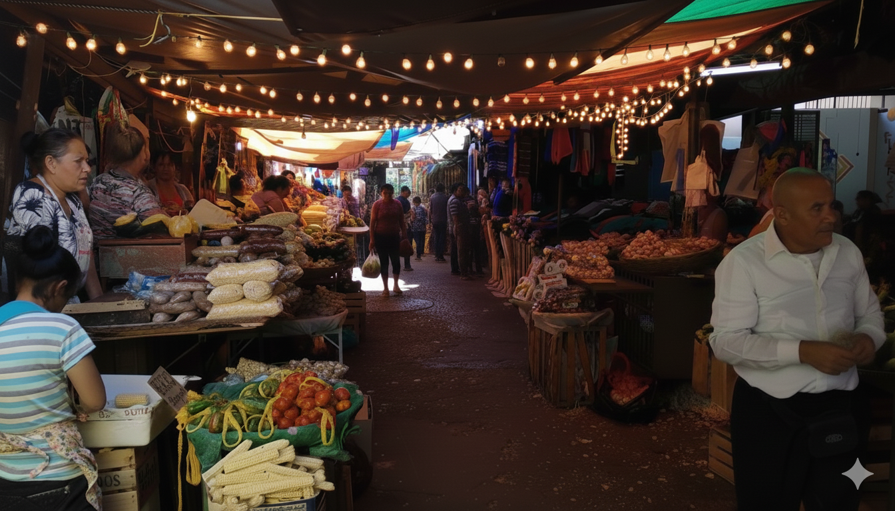

¿Quién soy? ¿De donde vengo?

Nací en Asunción el 22 de diciembre de 1973.
Fue un sábado, día de descanso para muchos. En mi caso, la palabra descanso casi nunca estuvo en el diccionario. Lo mío siempre fue el trabajo.
Crecí en una familia tradicional católica. Mi madre dedicada al hogar y a sus hijos. Mi padre, hombre de trabajo de sol a sol, me enseñó desde temprano que nada se consigue sin esfuerzo. Soy el mayor de cinco hermanos, y esa posición no es un título: es una escuela de responsabilidad.
Me crié en la calle Batilana, en el barrio Ciudad Nueva. Ahí jugué, me caí, aprendí y entendí lo que significa ganarse las cosas. No nací en cuna de oro. Aprendí desde abajo.Fui padre a los 22 años. No sabía cómo serlo, como nadie sabe al principio. Pero nunca me rendí. Asumí la responsabilidad y la honré. Ser padre fue el trabajo más importante de mi vida.
No soy perfecto. Pero si algo me define es que no huyo de mis errores. Prefiero que me juzguen por mis fracasos, porque son pocos, y de todos aprendí. Mis victorias son consecuencia del esfuerzo; mis caídas, prueba de que siempre estuve en la cancha.
La ciudad con la que sueño
Tengo 52 años. Soy padre, hombre de familia, trabajador del sector privado desde hace casi tres décadas. Creo en valores simples: respeto, esfuerzo y honestidad.
Siempre cumplí mi parte. Pago mis impuestos, respeto las normas, llego a tiempo en pocas palabras, no busco atajos.
La ciudad con la que soñé para ver crecer a mis hijos no fue la que imaginé. La corrupción y la "viveza"pesan más de lo que deberían. Y eso cansa, pero no renuncio a la idea.
Tal vez ya no vea esa ciudad justa, ordenada y coherente que quise para ellos, tal vez, ya no me toque disfrutarla pero espero que lo que hago sume y que mi ejemplo valga y asi que mi granito de arena ayude a construir algo mejor.
Quizás mis nietos o bisnietos puedan vivir en esa ciudad donde hacer lo correcto sea lo normal y aunque yo no esté para verlo, me alcanza con saber que cumplí.

Lo ganará el asunceno al elegirme
El asunceno ganará algo simple, pero cada vez más escaso: coherencia.
Ganará a un hombre de 52 años que sabe lo que es trabajar 27 años en el sector privado, cumplir horarios, pagar impuestos y respetar las reglas sin buscar atajos. Alguien que entiende que administrar lo público no es un privilegio, es una responsabilidad.
Ganará gestión con criterio, no improvisación. Orden antes que discurso. Transparencia antes que excusas. Ganará a alguien que respeta las normas de tránsito y también respetará las normas institucionales. Que no negocia principios. Que no necesita “contactos” para hacer lo que corresponde.
El asunceno ganará previsibilidad. Servicios que funcionen. Cuentas claras. Prioridades claras.
No prometo magia. Prometo trabajo, reglas iguales para todos y decisiones pensando en la ciudad que merecen nuestros hijos… y los hijos de nuestros hijos
